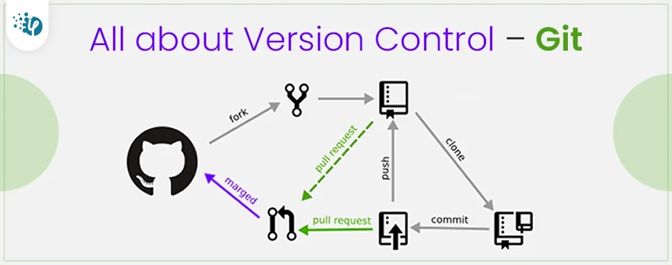

Version control is a system that records changes to files over time so that you can recall specific versions later. It is an essential tool for software development. It allows multiple developers to work on the same project without overwriting each other's changes. Version control systems help track changes, manage code, and collaborate effectively.

Published on : April 18, 2025
Version control systems are essential for modern software development. They help teams collaborate and manage changes to codebases efficiently. Popular version control systems include Git, Mercurial, and Subversion. Understanding how to use these tools is crucial for any developer. Version control allows you to track changes, revert to previous states, and work on multiple features simultaneously. It also enables better collaboration among team members, reducing conflicts and improving productivity. Learning version control can seem daunting at first, but with practice, it becomes second nature. Many resources are available online to help you get started with version control. Consider taking a course or reading documentation to deepen your understanding. Remember, mastering version control is a valuable skill that will benefit your career in software development. Stay updated with the latest trends and best practices in version control to enhance your workflow. Join communities and forums to share knowledge and learn from others' experiences. Version control is not just a tool; it's a mindset that fosters collaboration and innovation. Embrace version control as part of your development process, and you'll see the benefits in your projects. Whether you're working on personal projects or in a team, version control is an indispensable part of modern software development. So, start using version control today and take your development skills to the next level! For more information, check out the official documentation of your preferred version control system. Happy coding!